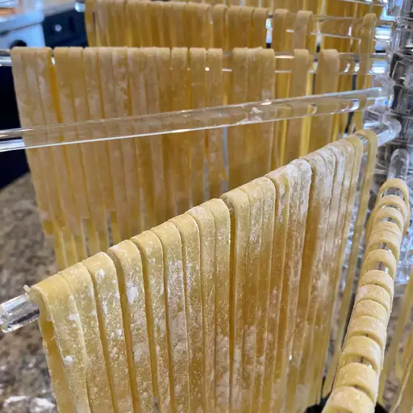

Homemade Pasta Dough

Description
This pasta dough recipe is consistently great and easy to make.
Ingredients
- 2 cups flour
- 3 large eggs, at room temperature
- 2 tablespoons olive oil
- 1 teaspoon salt
- 2 tablespoons water, or as needed
Steps
- Mix flour, eggs, olive oil, and salt in a bowl until combined. Add water, 1 teaspoon at a time, to flour mixture until a smooth, thick dough forms.
- Turn dough out onto a lightly floured work surface and knead for 10 minutes. Let dough rest for 5 to 10 minutes.
- Divide dough into 8 balls; use a pasta machine to roll and cut dough into desired pasta shape.
Cook's Note:
This dough makes really great homemade linguine or ravioli using a manual pasta machine. If it's too sticky, just roll a bit in flour.
This recipe makes enough pasta for 24 small raviolis or 4 servings of linguine. Whatever pasta you make, it should take no more than 4 to 6 minutes to boil.